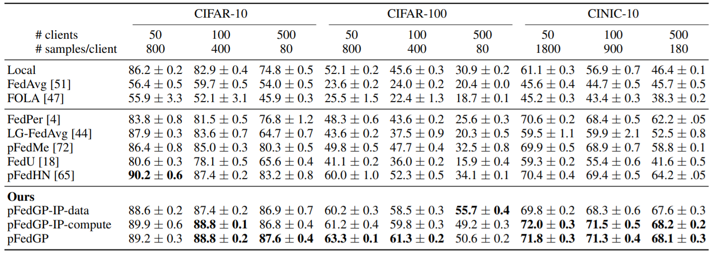
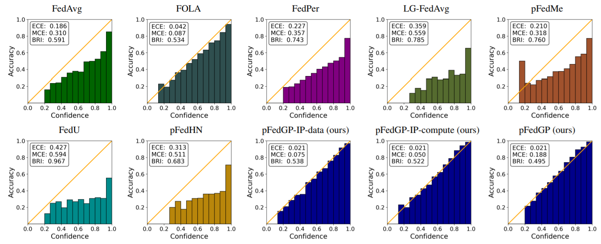
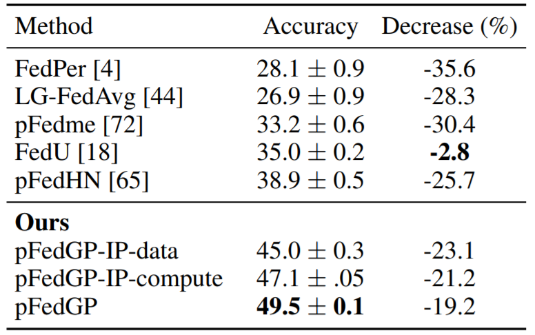
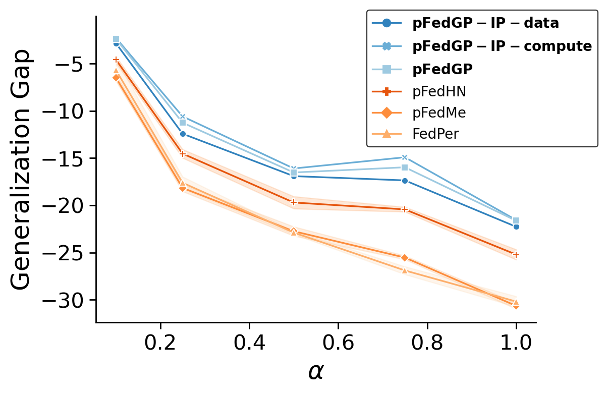

Figure 1. Personalized Gaussian Process Federated (pFedGP) framework.
Federated learning aims to learn a global model that performs well on client devices with limited cross-client communication.
Personalized federated learning (PFL) further extends this setup to handle data heterogeneity between clients by learning personalized models.
A key challenge in this setting is to learn effectively across clients even though each client has unique data that is often limited in size.
We present pFedGP, a solution to PFL that is based on Gaussian processes (GPs) with deep kernel learning.
GPs are highly expressive models that work well in the low data regime due to their Bayesian nature.
However, applying GPs to PFL raises multiple challenges. Mainly, GPs performance depends heavily on access to a good kernel function, and learning a kernel requires a large training set.
Therefore, we propose learning a shared kernel function across all clients, parameterized by a neural network, with a personal GP classifier for each client.
We further extend pFedGP to include inducing points using two novel methods, the first helps to improve generalization in the low data regime and the second reduces the computational cost.
We derive a PAC-Bayes generalization bound on novel clients and empirically show that it gives non-vacuous guarantees.
Extensive experiments on standard PFL benchmarks with CIFAR-10, CIFAR-100, and CINIC-10, and on a new setup of learning under input noise show that pFedGP achieves
well-calibrated predictions while significantly outperforming baseline methods, reaching up to 21% in accuracy gain.
Experiments
Heterogeneous Data
Table 1. Heterogeneous data. Test accuracy (± SEM) over 50,100,500 clients on the CIFAR-10, CIFAR-100, and CINIC-10 datasets.

We compare pFedGP to previous studies on non-iid data distribution using CIFAR-10/100 and CINIC-10 datasets.
The results are presented in Table 1. pFedGP achieves large improvements up to 21% over all competing approaches.
Calibration
Figure 1. Calibration. Reliability diagrams on CIFAR-100 with 50 clients. Each plot shows the expected
& maximum calibration error (ECE & MCE) and the Brier Score (BRI). Lower is better. Diagonal indicates perfect calibration..

A desired property from PFL classifiers is the ability to provide uncertainty estimation.
For example, in decision support systems, such as in healthcare applications, the decision-maker should have an accurate estimation
of the classifier confidence in the prediction. We quantify the uncertainty through calibration.
Figure 1 compares all methods both visually and using common metrics on the CIFAR-100 dataset with 50 clients.
Expected calibration error (ECE) measures the weighted average between the classifier confidence and accuracy.
Maximum calibration error (MCE) takes the maximum instead of the average. And, Brier score (BRI) measures the average squared
error between the labels and the prediction probabilities. The figure shows that pFedGP classifiers are best calibrated
across all metrics in almost all cases.
PFL with Input Noise
Table 2. Input noise. Test accuracy (± SEM) over 100 clients on noisy CIFAR-100. We also provide the relative
accuracy decrease (%) w.r.t. the performance on the original CIFAR-100 data (see Table 1).

In real-world federated systems, the clients may employ different measurement devices for data collection (cameras, sensors, etc.),
resulting in different input noise characteristics per client. We investigated pFedGP performance in this type of personalization.
To simulate that, we partitioned CIFAR-10/100 to 100 clients, defined 57 unique distributions of image corruption noise,
and we assigned a noise model to each client. Then for each example in each client we sampled a corruption noise according to the noise model allocated to that client.
Results for CIFAR-100 are shown in Table 2. We observe a significant gap in favor of the pFedGP variants compared to baseline methods.
Generalization to OOD Novel Clients
Figure 2. Generalization to novel clients. The generalization gap in accuracy between training and novel clients.

FL are dynamic systems. For example, novel clients may enter the system after the model was trained, possibly with a data distribution shift.
Adapting to a new OOD client is both challenging and important for real-world FL systems. To evaluate pFedGP in this scenario,
we followed the learning protocol proposed in (shamsian et al., 2021). Figure 2 reports the generalization gap as a function of the
Dirichlet parameter &alpha. The generalization gap is computed by taking the difference between the average test accuracy on ten novel clients
and the average test accuracy on the ninety clients used for training. From the figure, here as well, pFedGP achieves the best generalization performance for all values of &alpha.
Moreover, unlike baseline methods, pFedGP does not require any parameter tuning.
Bibtex
@inproceedings{achituve2021personalized,
title={Personalized Federated Learning with {G}aussian Processes},
author={Achituve, Idan and Shamsian, Aviv and Navon, Aviv and Chechik, Gal and Fetaya, Ethan},
booktitle={Proceedings of the 35th Conference on Neural Information Processing Systems},
year={2021}
}